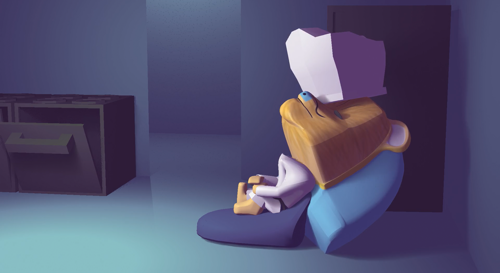
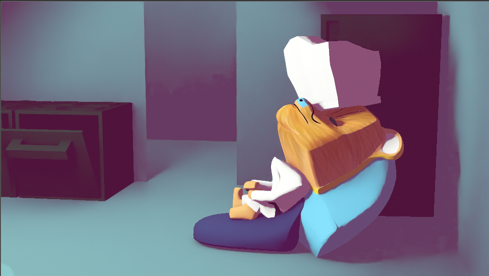
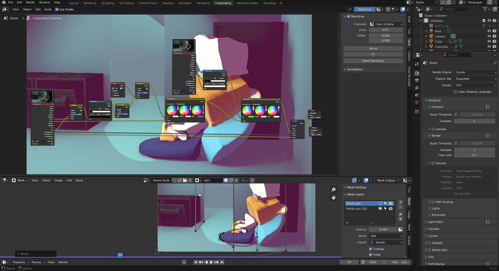

date:tue 2025-01-14
a while back, maybe a week ago, i watched a video by Noggi where he tried to recreate a scene from arcane using blender(mostly). it has inspired me to rework my workflow to build more of the shading in the compositore rather than the render engine it's self.
using my short shezmu animation from my maya class as a lab rat i started missing around with differet data passes. i also switched from Eevee to cycles to allow me access to more passes. with a low enough sample rate it takes around the same time to render
the original
the done through compostion
normally i get the cellshading from a shader node group, the basic shader to RGB into a color-ramp setup you are familiar with from every youtube tutorial except for slightly changing the tent of the shaded area or adding a texture. but here i used a normal psdf shader and did all the cellshading and color shifts in in the compositor. the advantages of this is being able to apply it to all objects in the scene at once without needing to edit all their shaders. and in case i need a specific object or part to be shaded differently i could use an object index or a mask
as noggi explains, much better than i can, this allows me full creative freedom over the look and style. compisiting is already a must for good renders but working on passes sepratly(a flat color pass, a lighting pass, ect.) then combining them into a final render, rather than simply working on a combined image pass, allows for lighting and coloring to be edited freely.
want to remove shadows from or add them to specific parts? mask it
shading looks good on all objects except one? correct the colors on that one object instead of having to edit the material and re-render it
am still new to this workflow, and masks in general, but i can aleady see it's potencial
we will see where this goes. anyways i haven't had a proper lunch in days, no reason i just forget to eat sometimes, steak and peas anyone?